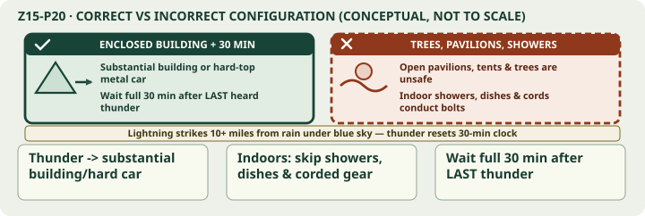

Z15-P20 · Disaster scenarios · New manuscript
Enforce indoor and outdoor lightning safety plus the 30-minute rule
Prevent direct and conductive indoor/outdoor lightning injuries during every electrical storm.
When it applies · Homes, yards, lakes, ballfields, and campgrounds whenever thunder is audible or lightning flashes.
Equipment · Substantial enclosed building (with wiring/plumbing) or hard-topped metal vehicle with windows rolled up, plus watch for 30-minute timer.

Actions
- Obey "When Thunder Roars, Go Indoors"—lightning strikes 10+ miles away from rain cores under clear blue sky; move immediately inside a substantial enclosed building or hard-topped metal vehicle (windows closed) rather than open picnic pavilions, fabric tents, dugouts, porches, or under trees.[E07, D04]
- Inside a home during active lightning, stay OFF corded landline phones, avoid touching plugged-in charging electronics, stay away from exterior windows/concrete basement floors/walls (rebar conducts ground current), and do NOT shower, bathe, or wash dishes (plumbing pipes and water conduct lightning current indoors!).[D04, E07]
- Wait a full 30 MINUTES AFTER THE LAST HEARD THUNDER before resuming swimming, boating, yard work, or outdoor play—many fatal lightning strikes occur as storms depart.[E07, D04]
Failure recognition · Stepping back onto the lake dock five minutes after rain stops while distant thunder still rumbles, or taking a hot shower during a direct thunderstorm.[E07, D04]
Verify · Confirm everyone shelters inside a substantial building/hard-top car at first thunder, avoids indoor plumbing/corded gear, and times a full 30-minute clear window.[E07, D04]
Stop or change course · Any renewed clap of thunder resets the 30-minute indoor safety timer back to zero immediately.[E07]
Evidence and editorial notes
- D04 · FEMA / Ready.gov · Thunderstorms and Lightning (current web edition)
- Section: Severe Thunderstorms, Straight-Line Winds, Hail, and Lightning · Conditions: Severe Thunderstorm Warnings, derechos, and electrical storms
Support: Move indoors to a substantial building immediately when thunder is heard or severe wind warnings issue; stay away from windows, corded appliances, and plumbing during lightning, and avoid downed limbs and energized downed lines after derechos.
Limitations: Straight-line derecho winds can rival tornado damage across hundreds of miles and cause multi-day regional power blackouts. · Conflicting evidence: None; integrates with E07 and E18.
Editorial note: Grounds severe-storm, hail, and straight-line wind response cards. · Specialist reviewer: Meteorology and utility safety
Primary source · checked 2026-11-24 - E07 · NWS · Lightning Tips (current web edition)
- Section: If you hear thunder; when it is safe to return · Conditions: Thunderstorm and reachable substantial building or enclosed hard-topped vehicle
Support: Move to proper shelter at thunder. Wait 30 minutes after last thunder before resuming outdoor activity.
Limitations: Fabric tents, open pavilions, and trees are not lightning-safe shelters. · Conflicting evidence: None; 30-minute rule is standard NWS guidance.
Editorial note: Separates weather cover from lightning protection in Z02. · Specialist reviewer: Weather safety and emergency management
Primary source · checked 2026-11-24
Source lineage · NWS Lightning Tips and Ready.gov Thunderstorms; new manuscript · Classification · New manuscript.